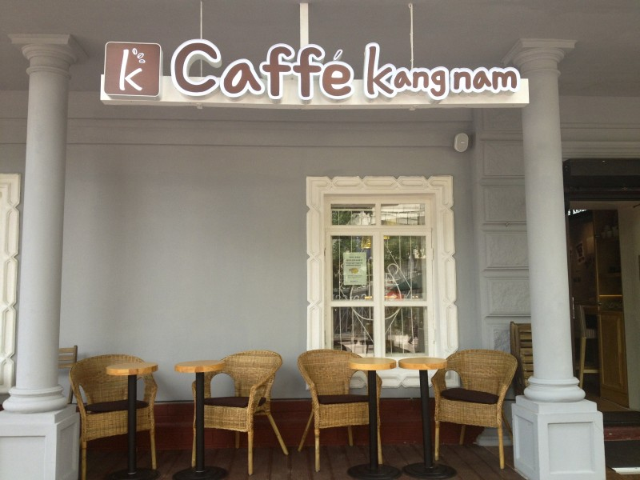
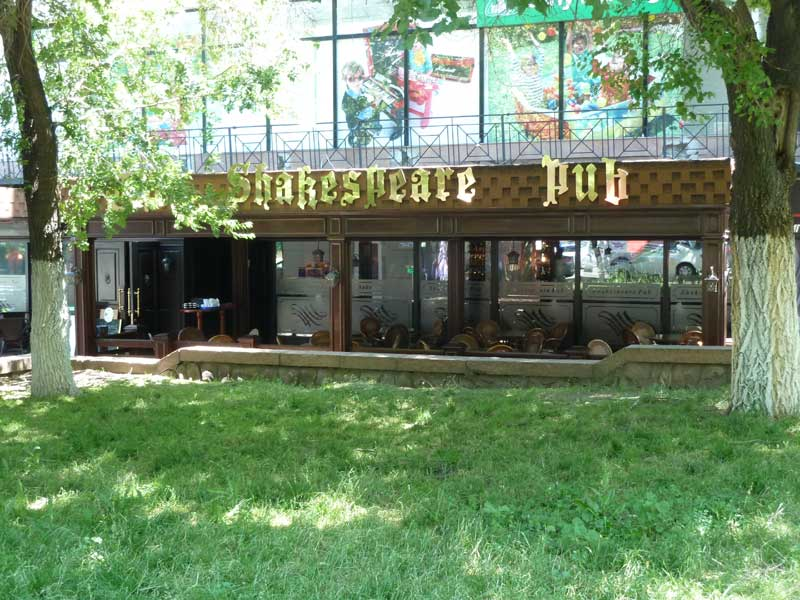
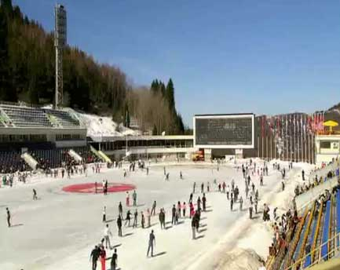
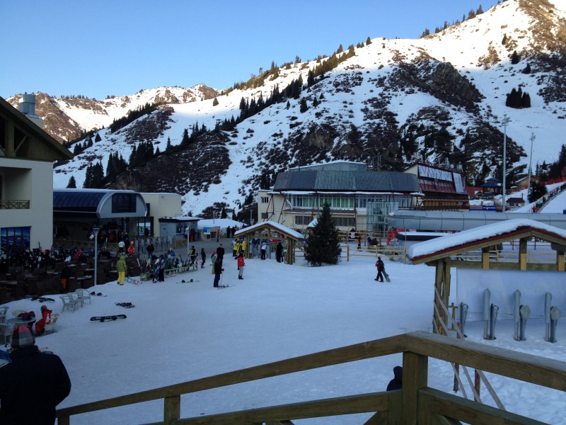
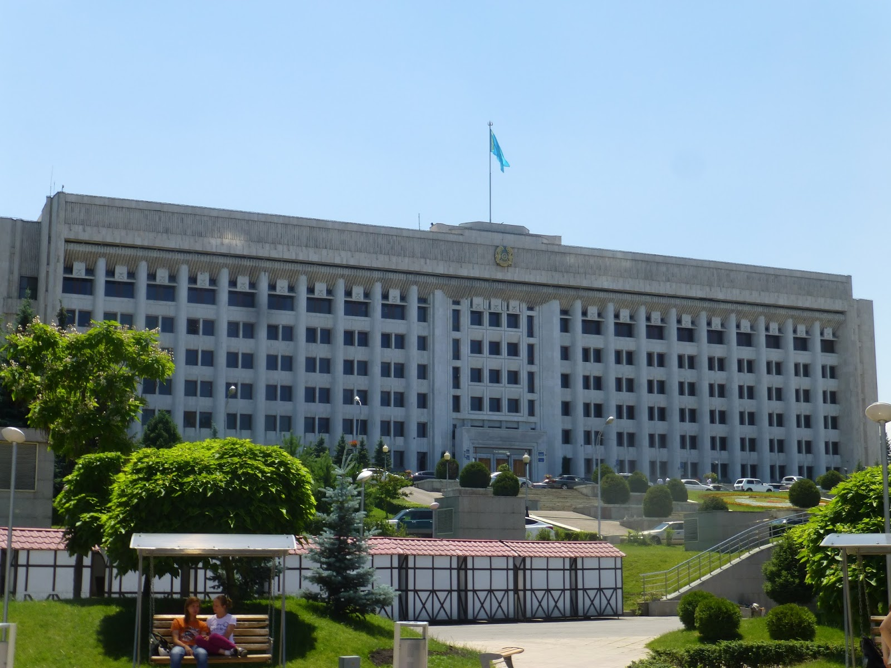
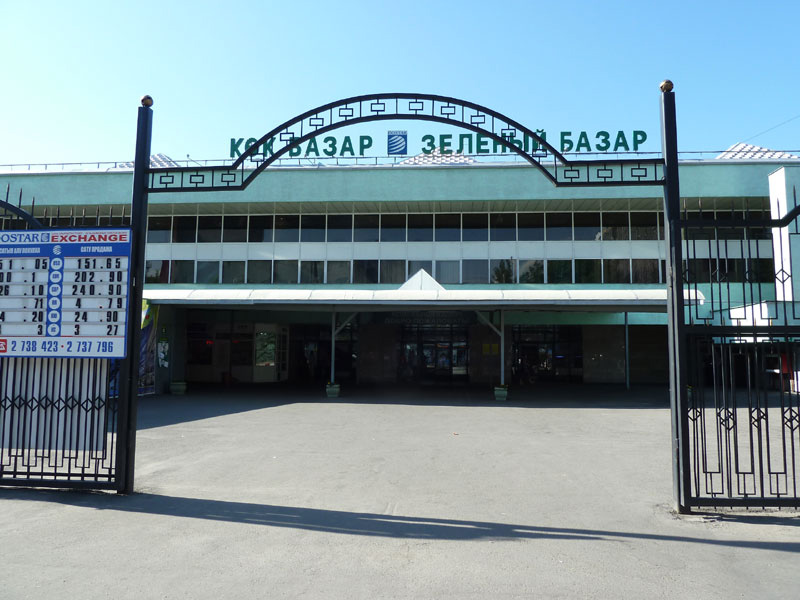

Caffe Kangnam
 Just a 5 min walk from the Zhibek Zholy Metro Station in one of Almaty’s most famous walking streets and you are at Kangnam Caffe. With a wide variety of cocktails, excellent coffee, specialty Korean deserts, a light lunch menu, a relaxing atmosphere and friendly well trained English speaking staff, we are sure you will feel at home as you sip on a cup of coffee or tea and enjoy the day.Read more
The Shakespeare Pub
 Address: 40 Dostyk near interdiv of Dostyk – Vinogradova, Almaty, KazakhstanThe pub has been set up to cater for the English speaking people visiting and residing in Almaty. The staff all speak English and are happy to welcome you to the pub/restaurant. The menu is in English and cuisine represents the best of the traditional UK pub.
Read more
Medeu Ice Skating
 Address: Gornaya St 465, Almaty 050020, Kazakhstan Telephone: +7 727 232 6848The Medeo outdoor ice skating ring is designed as a huge speed skating and Bandy area. Bandy is a team winter sport played on ice, in which skaters use sticks to direct a ball into the opposing team’s goal.
Read more
Shymbulak Ski Resort
 The Shymbulak Ski Resort is located 25km outside Almaty city. There are three ski lifts at the resort with the highest going to 3200 meters above sea level. There is also a Hotel located at the Resort, enabling those wishing to ski during the day, have a place to stay at night.Read more
Akimat House of Almaty
 The official Government Building of Almaty, located on the Republic Square next to the Monument of Independence, The Presidential Residence, The Foundation of the First President of the Republic of Kazakhstan, and The Central State Museum of the Republic of Kazakhstan.Read more
Green Bazaar
 Address: Zenkov St, Almaty, Kazakhstan Telephone: +7 778 587 8112The Green Bazaar, or Zelionyj Bazar, is a place you really should visit when visiting Almaty or Alma-Ata. This market is central to the every day life of the local people and it is so called the ‘Green Bazar, or market, because in the past it was the traditional place to buy and sell local produce like vegetables.
Read more